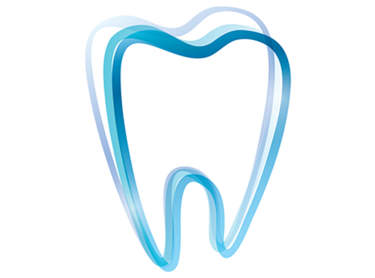

Προσιτή τιμή με εξαιρετικό αποτελέσμα. Τις προτείνω σε όλους!

Καλή τιμή και εύκολη εφαρμογή, τώρα χαμογελάω με αυτοπεποίθηση!

Φαίνονται σαν φυσικά δόντια και κοστίζει πολύ λιγότερο από όσο νόμιζα, είμαι πολύ ευχαριστημένος!

Άνετη οδοντοστοιχία, εύκολη στη περιποίηση και έχει κομψή εμφάνιση!

Μετά την τοποθέτηση της οδοντοστοιχίας, νιώθω νέος άνθρωπος.

Χάρη στην αφαιρούμενη οδοντοστοιχία δεν μπορώ να σταματήσω να χαμογελάω.

Βρήκα λύση για το χαμόγελό μου με την αφαιρούμενη οδοντοστοιχία και κυρίως μπορώ να φάω.

Η αφαιρούμενη οδοντοστοιχία άλλαξε τη ζωή μου - το χαμόγελό μου έγινε τέλειο.
Προσιτή τιμή
Άμεσο αποτέλεσμα
Άνεση
Ευκολία τοποθέτησης

Παραγγείλετε την σταθερή αφαιρούμενη οδοντοστοιχία

Παραλάβετε και ακολουθήστε τις αναγραφόμενες οδηγίες

Εφαρμόστε την άμεσα, εύκολα και ανώδυνα
Πώς να επιλέξετε το σωστό μέγεθος οδοντοστοιχίας;
Παρέχουμε λεπτομερείς οδηγίες και σας υποστηρίζουμε σε κάθε βήμα.
Πόση διάρκεια έχουν οι οδοντοστοιχίες;
Με την κατάλληλη φροντίδα μπορούν να διαρκέσουν πολλά χρόνια.
Ξεκινήστε τώρα και παραλάβετε τις οδοντοστοιχίες στο σπίτι σας!
Η οδοντιατρική έχει υποστεί σημαντικές αλλαγές τα τελευταία χρόνια και μία από τις πιο αξιοσημείωτες τάσεις ήταν η αύξηση της δημοτικότητας της αφαιρούμενης σταθερής οδοντοστοιχίας, που μπορεί να εφαρμοστεί στο σπίτι. Αυτές οι καινοτόμες λύσεις προσφέρουν στους καταναλωτές ευκολία και εξοικονόμηση χρημάτων και ταυτόχρονα προκαλούν τις παραδοσιακές μεθόδους οδοντιατρικής.
Οι αφαιρούμενες οδοντοστοιχίες είναι λεπτές υποαλλεργικές οδοντιατρικές σύνθετες όψεις που τοποθετούνται πάνω από τα δόντια για να βελτιώσουν την εμφάνισή τους. Βοηθούν στην απόκρυψη αισθητικών ατελειών, όπως: αποχρωματισμό, ανομοιομορφία, χασμοδοντία, τρίξιμο δοντιών,περιοδοντίτιδα ή ρωγμές και σπασμένα δόντια. Ευκολη εφαρμογή χωρίς την ανάγκη επίσκεψης σε οδοντιατρείο. Με τις αφαιρούμενες σταθερές οδοντοστοιχίες, οι χρήστες μπορούν να αποκτήσουν το χαμόγελο που θέλουν, χωρίς περίπλοκες διαδικασίες ή υψηλό κόστος.
Ένας από τους κύριους παράγοντες που συμβάλλουν στη δημοτικότητα τους είναι η τιμή τους. Οι παραδοσιακές οδοντοστοιχίες, που απαιτούν επαγγελματική κατασκευή και τοποθέτηση, μπορεί να κοστίσουν αρκετές χιλιάδες ευρώ. Ενώ οι αφαιρούμενες οδοντοστοιχίες είναι πολύ φθηνότερες, γεγονός που τις καθιστά προσιτές σε ένα ευρύ κοινό.
Η διαδικασία τοποθέτησης της αφαιρούμενης οδοντοστοιχίας έχει εύκολο και άμεσο αποτέλεσμα. Η συσκευασία περιλαμβάνει όλες τις απαραίτητες οδηγίες που επιτρέπει στον χρήστη να τις εφαρμόσει μόνος του. Οι οδοντοστοιχίες κατασκευάζονται από οδοντοτεχνίτες. Αυτό εξαλείφει την ανάγκη για περίπλοκες οδοντιατρικές επεμβάσεις και επισκέψεις.
Οι αφαιρουμενες οδοντοστοιχιες προσφέρουν στους χρήστες ευελιξία. Μπορούν εύκολα να τοποθετηθούν και να αφαιρεθούν κατά βούληση, επιτρέποντάς σας να αλλάξετε την εμφάνιση ανάλογα με την κατάσταση ή τη διάθεση. Αυτό τις καθιστά επίσης ως μια βολική επιλογή για όσους αναζητούν μια προσωρινή λύση ή θέλουν να δοκιμάσουν ένα νέο στυλ χαμόγελου πριν πάρουν μια μόνιμη απόφαση.
Η διαδικασία παραλαβής και τοποθέτησης είναι άμεση και εύκολη.
Οι οδοντίατροι έχουν διαφορετική στάση απέναντι σε αυτό το νέο προϊόν. Ορισμένοι πιστεύουν ότι οι αφαιρούμενες οδοντοστοιχίες μπορούν να είναι ένα χρήσιμο προϊόν για την προσωρινή βελτίωση της εμφάνισης των δοντιών. Ωστόσο, άλλοι ειδικοί προειδοποιούν για πιθανούς κινδύνους, όπως η μη πλήρης εφαρμογή ή ο πιθανός αντίκτυπός τους στην υγεία των δοντιών και των ούλων σας.
Η Dr. Brenda Hoffman, οδοντίατρος από το Λονδίνο, σημειώνει:
Οι αφαιρούμενες οδοντοστοιχίες παρέχουν μια άνετη και προσιτή λύση για όσους αναζητούν άμεσα αποτελέσματα. Ωστόσο, είναι σημαντικό να ληφθεί υπόψη ότι η μακροχρόνια χρήση αυτών των οδοντοστοιχιών μπορεί να απαιτεί τακτική συντήρηση.
Οι αφαιρούμενες σταθερές οδοντοστοιχίες, που μπορούν να τοποθετηθούν στο σπίτι, αντιπροσωπεύουν σημαντική πρόοδο στην αισθητική οδοντιατρική, προσφέροντας μια βολική και οικονομική λύση για όσους θέλουν να βελτιώσουν το χαμόγελό τους χωρίς έξοδα ή μακροχρόνιες διαδικασίες. Ωστόσο, οι χρήστες θα πρέπει να είναι προσεκτικοί και να ακολουθούν τους κανόνες υγιεινής και συντήρησης για τη διατήρησή τους.
Ξεκινήστε τώρα και παραλάβετε τις οδοντοστοιχίες στο σπίτι σας!